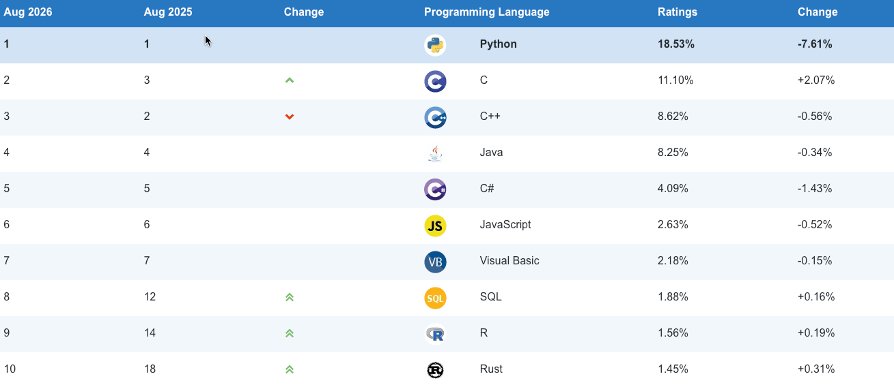
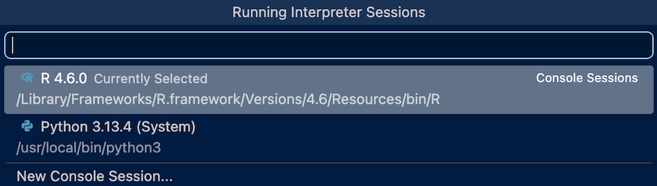
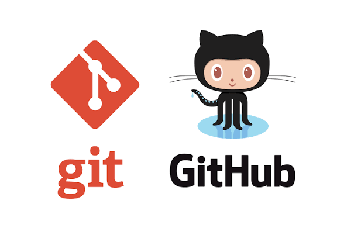
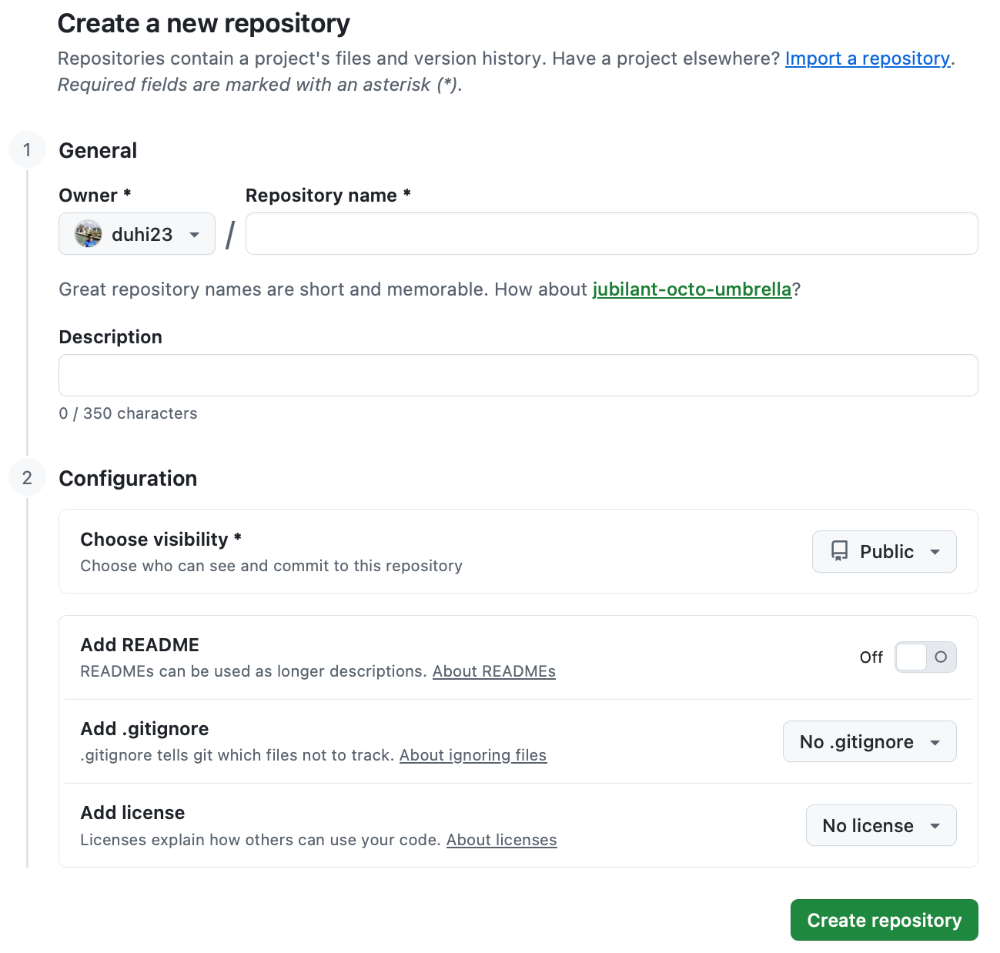
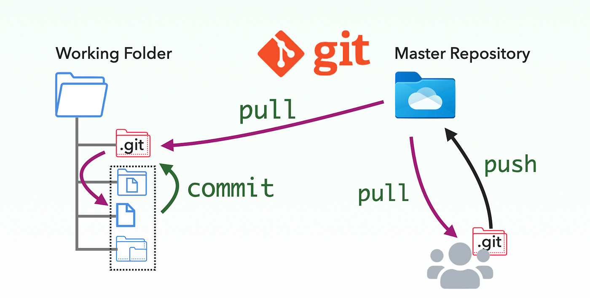
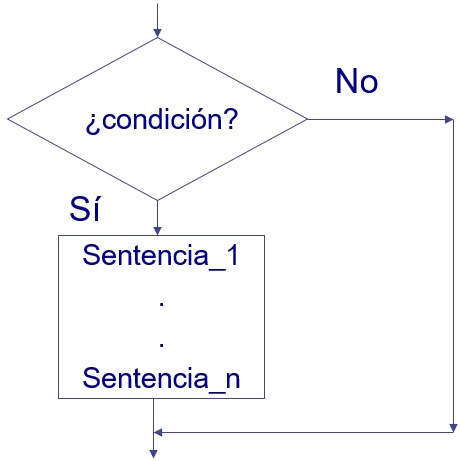

edad <- 20L
altura <- 1.68
nombre <- "María"
es_estudiante <- TRUE
class(edad); class(altura); class(nombre); class(es_estudiante)[1] "integer"[1] "numeric"[1] "character"[1] "logical"IA y Programación
¿Por qué nos importa esto?
R y Python son los lenguajes más usados en análisis de datos, estadística y ciencia de datos, pero provienen de comunidades distintas: R se creó para programación estadística y Python para programación general. En la práctica profesional es común encontrar equipos donde algunos analistas programan en R y otros en Python, y ambos deben poder leer y entender el trabajo del otro. Este tema proporciona las bases de programación: variables, estructuras de datos, control de flujo, funciones y manejo de archivos en ambos lenguajes a la vez, para que el estudiante pueda moverse entre ellos con soltura y elegir la herramienta correcta según el problema, no según la costumbre.

Al finalizar este tema, el estudiante será capaz de:
Antes de programar se necesita instalar tres cosas: los lenguajes (R y Python), el IDE (Positron) y el sistema de control de versiones (Git/GitHub). Esta sección es una guía de referencia; síguela una sola vez al preparar tu computador.
Descarga R desde CRAN: https://cran.r-project.org/ (elige tu sistema operativo: Windows, macOS o Linux).
Instala con las opciones por defecto.
Verifica la instalación abriendo una terminal y ejecutando:
R --versionEl CRAN (Comprehensive R Archive Network) es la red oficial y global de servidores espejo que centraliza el ecosistema del lenguaje R, almacenando su instalador base, la documentación técnica y más de 20,000 paquetes de funciones adicionales. Su propósito principal es garantizar un acceso rápido, seguro y de alta calidad a las herramientas de análisis de datos, permitiendo a los usuarios instalar complementos revisados y verificados de forma automática.
Descarga Python desde https://www.python.org/downloads/ (versión 3.10 o superior), o instala una distribución como Miniconda (https://docs.conda.io/en/latest/miniconda.html) si prefieres manejar entornos virtuales con conda.
Durante la instalación en Windows, marca la opción “Add Python to PATH”.
Verifica la instalación:
python --version
pip --versionSin librerías, programar en R o Python es como intentar construir una mesa yendo primero al bosque a talar el árbol, para luego fundir metal con el fin de fabricar tus propios clavos y herramientas de corte. Al tener que desarrollar cada funcionalidad desde cero, el proceso se vuelve lento, tedioso y propenso a errores estructurales. En cambio, utilizar librerías equivale a entrar a un taller moderno y totalmente equipado, donde abres una caja de herramientas y tomas un martillo, una lijadora eléctrica o pegamento industrial listos para usar. Al saltarte la fabricación de herramientas y maquinaria, puedes concentrarte exclusivamente en el diseño y el ensamblaje, lo que te permite crear un producto resistente, eficiente y de calidad profesional en una fracción del tiempo.
La instalación estándar de R incluye por defecto un total de 14 paquetes. Son el núcleo indispensable del lenguaje. Se instalan y se cargan automáticamente en la memoria cada vez que abres R, por lo que sus funciones están listas para usarse sin comandos previos.
Python trae una colección masiva de módulos y paquetes preinstalados conocida oficialmente como la Biblioteca Estándar de Python, lo que significa que el lenguaje viene listo para resolver problemas complejos desde el primer segundo.
# Instalar un paquete desde CRAN
install.packages("tidyverse")
# Cargar el paquete en la sesión actual
library(tidyverse)
# (Opcional) reticulate, necesario para mezclar R y Python en Quarto
install.packages("reticulate")Para fijar versiones reproducibles de paquetes por proyecto se recomienda renv:
install.packages("renv")
renv::init() # crea un entorno aislado para el proyecto# Crear un entorno virtual aislado para el proyecto
python -m venv .venv
# Activarlo
source .venv/bin/activate # Linux / macOS
.venv\Scripts\activate # Windows
# Instalar librerías
pip install pandas numpy matplotlib openpyxl
# Guardar las dependencias del proyecto
pip freeze > requirements.txt
# Instalar desde requirements.txt en otro computador
pip install -r requirements.txtPositron es un entorno de desarrollo integrado (IDE) de última generación que supera a alternativas tradicionales como RStudio al combinar la potencia del ecosistema de VS Code con una arquitectura específicamente optimizada para la ciencia de datos. A diferencia de otros editores genéricos, ofrece una interfaz nativa con paneles dedicados para la visualización de datos, variables y gráficos que se ejecutan en procesos independientes, lo que impide que el entorno se bloquee al procesar grandes volúmenes de información. Además, su gran ventaja competitiva radica en su capacidad multilingüe real, permitiendo alternar de forma simultánea, fluida y sin configuraciones complejas entre proyectos de R y Python dentro de un mismo espacio de trabajo moderno y altamente extensible.

Positron reconoce automáticamente los intérpretes instalados, pero conviene verificarlo:
File → Open Folder).
.venv creado en el paso anterior)..qmd con el botón Render..qmd gracias al paquete de R reticulate, que se carga en el chunk setup del documento.#| label: setup
#| include: false
library(reticulate)
if (!py_module_available("pandas")) {
py_install(c("pandas", "numpy", "matplotlib", "openpyxl"))
}En la programación, la genialidad individual se potencia cuando se comparte de forma ordenada el código. GitHub no es solo un almacén de archivos; es el lienzo donde el código cobra vida, se transforma y se escala sin perder el control. Al adoptarlo dejas atrás el caos de las versiones infinitas y de los archivos duplicados.

GitHub es una plataforma de desarrollo colaborativo basada en la nube que utiliza el sistema de control de versiones Git para almacenar, gestionar y rastrear cambios en el código fuente. Funciona como un repositorio centralizado donde programadores y científicos de datos pueden guardar sus proyectos de forma segura, permitiendo revisar el historial completo de modificaciones y revertir errores en cualquier momento sin perder el trabajo previo. Su mayor valor radica en facilitar el trabajo en equipo mediante herramientas como “ramas” (branches) para experimentar de forma aislada y “pull requests” para revisar código antes de integrarlo al proyecto principal. Además, al integrarse nativamente con entornos como Positron y VS Code, se ha convertido en el estándar global tanto para el desarrollo de software comercial como para la colaboración en proyectos de código abierto y de ciencia de datos.
Instala Git: https://git-scm.com/downloads.
Regístrate en Github y crea una cuenta gratuita: https://github.com/signup.
Configura tu identidad (una sola vez por computador) con el usuario y correo que registraste en GitHub, para ello, en el terminal ejecuta:
git config --global user.name "Tu Usuario"
git config --global user.email "tu_correo@ejemplo.com"Crea un repositorio en Github (botón New repository).

Vincula tu carpeta local con el repositorio remoto:
git init
git remote add origin https://github.com/<usuario>/<repositorio>.git
git add .
git commit -m "Primer commit"
git branch -M main
git push -u origin mainEn Positron, el panel Source Control (ícono de rama en la barra lateral) permite hacer stage, commit y push/pull sin usar la terminal, si lo prefieres.
Flujo básico que usarás a lo largo de todo el curso si optas por usar GitHub para el control de versiones:

git pull # Traer los últimos cambios
# ... Editas tus archivos ...
git add archivo.qmd # Agregas nuevos archivos o cambios
git commit -m "Descripción breve del cambio" # Comentas
git push # Envías los cambios al repositorio💡 Tip: Si prefieres enviar el 100% de los archivos de tu versión local:
git push -u origin main –force
En la ciencia de datos y la actuaría, la gestión eficiente de la información depende directamente de la elección adecuada de las estructuras de datos. Tanto Python como R ofrecen un amplio catálogo de objetos nativos y extendidos como: vectores, listas, DataFrames y arreglos diseñados para manipular desde colecciones unidimensionales simples hasta tablas multidimensionales complejas, permitiendo optimizar el uso de memoria y la velocidad de cómputo según la naturaleza de los datos.
Comprender la sintaxis, mutabilidad e intencionalidad de estos objetos en ambos lenguajes es el paso fundamental para construir flujos de trabajo estructurados, analizables y altamente escalables.
Una variable es un nombre que apunta a un valor guardado en memoria. Los tipos básicos son equivalentes conceptualmente en ambos lenguajes:
| Tipo | R | Python |
|---|---|---|
| Numérico entero | integer (5L) |
int (5) |
| Numérico decimal | numeric (5.2) |
float (5.2) |
| Texto | character ("a") |
str ("a") |
| Lógico | logical (TRUE) |
bool (True) |
💡 Tip: En R usa <- para asignar variables, mientras que en Python se usa =.
edad <- 20L
altura <- 1.68
nombre <- "María"
es_estudiante <- TRUE
class(edad); class(altura); class(nombre); class(es_estudiante)[1] "integer"[1] "numeric"[1] "character"[1] "logical"edad = 20
altura = 1.68
nombre = "María"
es_estudiante = True
print(type(edad), type(altura), type(nombre), type(es_estudiante))<class 'int'> <class 'float'> <class 'str'> <class 'bool'>En R, el vector (c()) es la estructura fundamental: una colección homogénea (todos los elementos del mismo tipo) y es la base de casi todo en el lenguaje. Python no tiene un tipo “vector” nativo; su estructura básica es la lista, que es heterogénea y ordenada. Cuando en Python se necesita un vector homogéneo con operaciones matemáticas vectorizadas (como en R), se usa un array de NumPy.
notas <- c(8, 7.5, 9, 6.8, 10)
notas # imprime el vector completo[1] 8.0 7.5 9.0 6.8 10.0notas[1] # primer elemento (R indexa desde 1)[1] 8notas[2:4] # subconjunto por rango[1] 7.5 9.0 6.8notas[-2] # subconjunto excluyendo el segundo elemento[1] 8.0 9.0 6.8 10.0notas * 2 # operación vectorizada: se aplica a cada elemento[1] 16.0 15.0 18.0 13.6 20.0notas - c(0.5, 1) # reciclaje de elementos: el vector más corto se repite[1] 7.5 6.5 8.5 5.8 9.5mean(notas) # operación con todos los elementos: min, max, sum, sqrt, etc.[1] 8.26length(notas) # número de elementos[1] 5# Lista nativa (heterogénea, sin operaciones vectorizadas automáticas)
notas = [8, 7.5, 9, 6.8, 10]
print(notas)[8, 7.5, 9, 6.8, 10]print(notas[0]) # Python indexa desde 08print(notas[1:4]) # subconjunto por rango (el índice final no es inclusivo)[7.5, 9, 6.8]# Para comportamiento "vectorial" como en R, se usa NumPy
import numpy as np
notas = np.array(notas)
print(np.delete(notas, 1)) # subconjunto excluyendo el segundo elemento[ 8. 9. 6.8 10. ]print(notas * 2) # operación vectorizada[16. 15. 18. 13.6 20. ]# Reciclaje de elementos (en Python se simula repitiendo el vector más corto)
print(notas.mean()) # Operaciones globales (media, min, max, sum, sqrt).8.26print(len(notas)) # número de elementos5En R, list() permite guardar elementos de distinto tipo y tamaño (incluso otras listas). En Python, la lista ([]) ya cumple ese rol de forma nativa, sin necesidad de una función especial.
estudiante <- list(
nombre = "Carlos",
edad = 22L,
notas = c(8, 7, 9, 10)
)
estudiante$nombre # acceso por nombre[1] "Carlos"estudiante[["notas"]] # acceso por nombre (forma alternativa)[1] 8 7 9 10estudiante$notas[2] # acceso anidado[1] 7mean(estudiante[["notas"]]) # promedio de las notas[1] 8.5# En Python, un diccionario es más análogo a la "lista con nombres" de R
estudiante = {
"nombre": "Carlos",
"edad": 22,
"notas": [8, 7, 9, 10]
}
print(estudiante["nombre"]) # acceso por claveCarlosprint(estudiante["notas"][1]) # acceso anidado7print(np.mean(estudiante["notas"])) # promedio de las notas8.5El Data Frame es la estructura bidimensional fundamental para el análisis de datos en ambos lenguajes, caracterizada por organizar la información en filas y columnas donde cada columna puede albergar un tipo de dato distinto (numérico, texto, factor o lógico). Mientras que en R esta estructura forma parte del núcleo nativo del lenguaje (data.frame), en Python se implementa a través de la librería especializada Pandas (pd.DataFrame); no obstante, en ambos entornos comparten el mismo principio conceptual: actuar como una tabla al estilo de una base de datos o hoja de cálculo, facilitando la manipulación, filtrado, agregación y transformación de conjuntos de datos complejos de manera altamente eficiente.
datos <- data.frame(
nombre = c("Ana", "Luis", "Marta", "Diego"),
edad = c(21, 23, 22, 28),
promedio = c(8.5, 7.2, 9.1, 10)
)
datos nombre edad promedio
1 Ana 21 8.5
2 Luis 23 7.2
3 Marta 22 9.1
4 Diego 28 10.0str(datos) # estructura de cada columna'data.frame': 4 obs. of 3 variables:
$ nombre : chr "Ana" "Luis" "Marta" "Diego"
$ edad : num 21 23 22 28
$ promedio: num 8.5 7.2 9.1 10datos$promedio # acceso a una columna[1] 8.5 7.2 9.1 10.0datos[datos$edad > 21, ] # filtrado de filas nombre edad promedio
2 Luis 23 7.2
3 Marta 22 9.1
4 Diego 28 10.0datos[datos$edad <= 25 & datos$promedio > 8.2, ] # filtrado de filas nombre edad promedio
1 Ana 21 8.5
3 Marta 22 9.1import pandas as pd
datos = pd.DataFrame({
"nombre": ["Ana", "Luis", "Marta", "Diego"],
"edad": [21, 23, 22, 28],
"promedio": [8.5, 7.2, 9.1, 10]
})
datos nombre edad promedio
0 Ana 21 8.5
1 Luis 23 7.2
2 Marta 22 9.1
3 Diego 28 10.0datos.info() # estructura de cada columna<class 'pandas.core.frame.DataFrame'>
RangeIndex: 4 entries, 0 to 3
Data columns (total 3 columns):
# Column Non-Null Count Dtype
--- ------ -------------- -----
0 nombre 4 non-null object
1 edad 4 non-null int64
2 promedio 4 non-null float64
dtypes: float64(1), int64(1), object(1)
memory usage: 224.0+ bytesdatos["promedio"] # acceso a una columna0 8.5
1 7.2
2 9.1
3 10.0
Name: promedio, dtype: float64datos[datos["edad"] > 21] # filtrado de filas nombre edad promedio
1 Luis 23 7.2
2 Marta 22 9.1
3 Diego 28 10.0datos[(datos["edad"] <= 25) & (datos["promedio"] > 8.2)] # filtrado de filas nombre edad promedio
0 Ana 21 8.5
2 Marta 22 9.1Ejemplo 1: Crea un vector/lista con las temperaturas (°C) registradas en una semana en la ciudad de Quito: 18, 20, 19, 22, 21, 17, 16. Se pide:
Solución razonada: Primero se almacenan los datos en una estructura homogénea correspondiente de cada lenguaje, luego se aplica una función de agregación para el promedio y una condición lógica para contar los días que cumplen el criterio.
temperaturas <- c(18, 20, 19, 22, 21, 17, 16)
promedio <- mean(temperaturas)
dias_calurosos <- sum(temperaturas > 19)
cat("Promedio:", promedio, "\n")Promedio: 19 cat("Días con más de 19°C:", dias_calurosos, "\n")Días con más de 19°C: 3 import numpy as np
temperaturas = np.array([18, 20, 19, 22, 21, 17, 16])
promedio = temperaturas.mean()
dias_calurosos = (temperaturas > 19).sum()
print("Promedio:", promedio)Promedio: 19.0print("Días con más de 19°C:", dias_calurosos)Días con más de 19°C: 3Nota: El operador de comparación (> 19) aplicado a toda la estructura genera un vector/array lógico, y sum() cuenta los TRUE/True, aprovechando que en ambos lenguajes TRUE/True se trata como 1 al sumarse.
Ejemplo 2: Construya un dataframe con 4 productos, su precio y la cantidad vendida. Se pide:
productos <- data.frame(
producto = c("Cuaderno", "Lápiz", "Mochila", "Borrador", "Goma", "Regla"),
precio = c(2.5, 0.5, 38, 0.6, 1.4, 0.3),
cantidad = c(52, 100, 7, 60, 70, 25)
)
# Data Frame creado
productos producto precio cantidad
1 Cuaderno 2.5 52
2 Lápiz 0.5 100
3 Mochila 38.0 7
4 Borrador 0.6 60
5 Goma 1.4 70
6 Regla 0.3 25# Nueva columna "ingreso" calculada a partir de las columnas existentes
productos$ingreso <- productos$precio * productos$cantidad
# Data Frame actualizado con la nueva columna
productos producto precio cantidad ingreso
1 Cuaderno 2.5 52 130.0
2 Lápiz 0.5 100 50.0
3 Mochila 38.0 7 266.0
4 Borrador 0.6 60 36.0
5 Goma 1.4 70 98.0
6 Regla 0.3 25 7.5# Filtro de productos con ingreso mayor a 100
productos[productos$ingreso > 100, ] producto precio cantidad ingreso
1 Cuaderno 2.5 52 130
3 Mochila 38.0 7 266# Productos con precio inferior a 1 usd
sum(productos[productos$precio < 1,]$cantidad)[1] 185import pandas as pd
productos = pd.DataFrame({
"producto": ["Cuaderno", "Lápiz", "Mochila", "Borrador", "Goma", "Regla"],
"precio": [2.5, 0.5, 38, 0.6, 1.4, 0.3],
"cantidad": [52, 100, 7, 60, 70, 25]
})
# Data Frame creado
productos producto precio cantidad
0 Cuaderno 2.5 52
1 Lápiz 0.5 100
2 Mochila 38.0 7
3 Borrador 0.6 60
4 Goma 1.4 70
5 Regla 0.3 25# Nueva columna "ingreso" calculada a partir de las columnas existentes
productos["ingreso"] = productos["precio"] * productos["cantidad"]
# Data Frame actualizado con la nueva columna
productos producto precio cantidad ingreso
0 Cuaderno 2.5 52 130.0
1 Lápiz 0.5 100 50.0
2 Mochila 38.0 7 266.0
3 Borrador 0.6 60 36.0
4 Goma 1.4 70 98.0
5 Regla 0.3 25 7.5# Filtro de productos con ingreso mayor a 100
productos[productos["ingreso"] > 100] producto precio cantidad ingreso
0 Cuaderno 2.5 52 130.0
2 Mochila 38.0 7 266.0# Productos con precio inferior a 1 usd
print(productos[productos["precio"] < 1]["cantidad"].sum())185Nota: Crear una columna nueva a partir de columnas existentes es una operación vectorizada en ambos lenguajes: la multiplicación se aplica fila por fila sin necesidad de un bucle explícito.
Ejercicio 1: Crea un vector/array con las edades de 8 personas de tu elección.
Calcular la edad máxima, mínima y la desviación estándar.
Ejercicio 2: Complete el dataframe de las notas de 5 estudiantes, sus tres notas parciales y calcule una columna “promedio_final”. Se pide:
Las sentencias condicionales son estructuras fundamentales de control de flujo que permiten a un programa evaluar expresiones lógicas y ejecutar bloques de código específicos según el resultado sea verdadero o falso (TRUE/FALSE en R o True/False en Python). Mientras que Python destaca por su sintaxis limpia y minimalista basada en la sangría obligatoria (if, elif, else), R utiliza una estructura tradicional delimitada por llaves (if, else if, else) e integra potentes alternativas vectorizadas como ifelse() o dplyr::case_when(). Dominar estas herramientas en ambos lenguajes es esencial para implementar lógica de negocios, transformar variables en data frames y automatizar la toma de decisiones dentro de pipelines de análisis de datos o algoritmos de machine learning.
La lógica es idéntica en ambos lenguajes; únicamente cambia la sintaxis.

nota <- 8.5
if (nota >= 9) {
print("Excelente")
} else if (nota >= 7) {
print("Aprobado")
} else {
print("Reprobado")
}[1] "Aprobado"nota = 8.5
if nota >= 9:
print("Excelente")
elif nota >= 7:
print("Aprobado")
else:
print("Reprobado")AprobadoNota: R usa llaves { } para delimitar los bloques; Python usa indentación (habitualmente 4 espacios) — no son opcionales, definen dónde empieza y termina cada bloque.
Los operadores lógicos permiten combinar o invertir evaluadores booleanos. En Python, la sintaxis es expresiva y basada en palabras clave en inglés (and, or, not), las cuales realizan evaluación de operadores escalares y vectorizados. Por su parte, R distingue estrictamente entre operadores escalares (&&, ||), diseñados para evaluar condiciones de un solo elemento dentro de estructuras como if(), y operadores vectorizados (&, |, !), que efectúan comparaciones elemento por elemento a lo largo de vectores o columnas de data frames.
Ejemplo 3: A continuación se presenta un conjunto de datos correspondiente al historial crediticio de 10 solicitantes de crédito en una institución financiera ecuatoriana. Se pide:
creditos <- data.frame(
cliente = paste0("C", 1:10),
edad = c(25, 42, 31, 58, 22, 37, 49, 29, 61, 34),
ingresos = c(1200, 2500, 1900, 3100, 950, 2100, 1750, 1800, 4000, 1500),
puntaje = c(580, 720, 680, 790, 610, 760, 590, 640, 810, 550)
)
# Solicitudes de crédito
creditos cliente edad ingresos puntaje
1 C1 25 1200 580
2 C2 42 2500 720
3 C3 31 1900 680
4 C4 58 3100 790
5 C5 22 950 610
6 C6 37 2100 760
7 C7 49 1750 590
8 C8 29 1800 640
9 C9 61 4000 810
10 C10 34 1500 550# Creación de la columna "evaluación"
creditos$evaluacion <- ifelse(creditos$ingresos >= 1800 & creditos$puntaje > 650, "Aprobado", "Rechazado")
creditos cliente edad ingresos puntaje evaluacion
1 C1 25 1200 580 Rechazado
2 C2 42 2500 720 Aprobado
3 C3 31 1900 680 Aprobado
4 C4 58 3100 790 Aprobado
5 C5 22 950 610 Rechazado
6 C6 37 2100 760 Aprobado
7 C7 49 1750 590 Rechazado
8 C8 29 1800 640 Rechazado
9 C9 61 4000 810 Aprobado
10 C10 34 1500 550 Rechazado# Creación de la columna "segmento_riesgo"
creditos$segmento <- ifelse(creditos$puntaje > 750, "Bajo",
ifelse(creditos$puntaje >= 600, "Medio", "Alto"))
creditos cliente edad ingresos puntaje evaluacion segmento
1 C1 25 1200 580 Rechazado Alto
2 C2 42 2500 720 Aprobado Medio
3 C3 31 1900 680 Aprobado Medio
4 C4 58 3100 790 Aprobado Bajo
5 C5 22 950 610 Rechazado Medio
6 C6 37 2100 760 Aprobado Bajo
7 C7 49 1750 590 Rechazado Alto
8 C8 29 1800 640 Rechazado Medio
9 C9 61 4000 810 Aprobado Bajo
10 C10 34 1500 550 Rechazado Alto# Filtrado de clientes con segmento de riesgo "Alto" o ha sido "Rechazado"
creditos[creditos$segmento == "Alto" | creditos$evaluacion == "Rechazado", ] cliente edad ingresos puntaje evaluacion segmento
1 C1 25 1200 580 Rechazado Alto
5 C5 22 950 610 Rechazado Medio
7 C7 49 1750 590 Rechazado Alto
8 C8 29 1800 640 Rechazado Medio
10 C10 34 1500 550 Rechazado Altoimport numpy as np
import pandas as pd
creditos = pd.DataFrame({
"cliente": [f"C{i}" for i in range(1, 11)],
"edad": [25, 42, 31, 58, 22, 37, 49, 29, 61, 34],
"ingresos": [1200, 2500, 1900, 3100, 950, 2100, 1750, 1800, 4000, 1500],
"puntaje": [580, 720, 680, 790, 610, 760, 590, 640, 810, 550],
})
# Solicitudes de crédito
print(creditos) cliente edad ingresos puntaje
0 C1 25 1200 580
1 C2 42 2500 720
2 C3 31 1900 680
3 C4 58 3100 790
4 C5 22 950 610
5 C6 37 2100 760
6 C7 49 1750 590
7 C8 29 1800 640
8 C9 61 4000 810
9 C10 34 1500 550# Creación de la columna "evaluacion" mediante np.where
creditos["evaluacion"] = np.where(
(creditos["ingresos"] >= 1800) & (creditos["puntaje"] > 650),
"Aprobado", "Rechazado")
print(creditos) cliente edad ingresos puntaje evaluacion
0 C1 25 1200 580 Rechazado
1 C2 42 2500 720 Aprobado
2 C3 31 1900 680 Aprobado
3 C4 58 3100 790 Aprobado
4 C5 22 950 610 Rechazado
5 C6 37 2100 760 Aprobado
6 C7 49 1750 590 Rechazado
7 C8 29 1800 640 Rechazado
8 C9 61 4000 810 Aprobado
9 C10 34 1500 550 Rechazado# Creación de la columna "segmento" mediante np.select
condiciones = [creditos["puntaje"] > 750, creditos["puntaje"] >= 600]
opciones = ["Bajo", "Medio"]
creditos["segmento"] = np.select(condiciones, opciones, default="Alto")
print(creditos) cliente edad ingresos puntaje evaluacion segmento
0 C1 25 1200 580 Rechazado Alto
1 C2 42 2500 720 Aprobado Medio
2 C3 31 1900 680 Aprobado Medio
3 C4 58 3100 790 Aprobado Bajo
4 C5 22 950 610 Rechazado Medio
5 C6 37 2100 760 Aprobado Bajo
6 C7 49 1750 590 Rechazado Alto
7 C8 29 1800 640 Rechazado Medio
8 C9 61 4000 810 Aprobado Bajo
9 C10 34 1500 550 Rechazado Alto# Filtrado de clientes con segmento de riesgo "Alto" o evaluación "Rechazado"
resultado = creditos[
(creditos["segmento"] == "Alto") | (creditos["evaluacion"] == "Rechazado")
]
print(resultado) cliente edad ingresos puntaje evaluacion segmento
0 C1 25 1200 580 Rechazado Alto
4 C5 22 950 610 Rechazado Medio
6 C7 49 1750 590 Rechazado Alto
7 C8 29 1800 640 Rechazado Medio
9 C10 34 1500 550 Rechazado AltoNota: La función ifelse() permite evaluar condiciones lógicas elemento por elemento a lo largo de un vector o columna de un data frame, retornando un nuevo vector con la misma longitud que la entrada.
Ejercicio 3: Calcular el porcentaje de descuento asignado a una compra según el tipo de cliente (VIP o Estándar), el monto total y si el cliente cuenta con un cupón promocional activo.
TRUE).Las sentencias repetitivas o bucles (for y while) permiten ejecutar un bloque de código múltiples veces de forma automatizada hasta cumplir una condición de parada, optimizando el procesamiento de datos iterativos en ambos lenguajes. En Python, la estructura for (cuando se conoce de antemano la secuencia a recorrer) destaca por su sintaxis clara y su capacidad nativa para iterar directamente sobre colecciones (for elem in lista:), complementada por la evaluación booleana continua de while (cuando se repite mientras se cumpla una condición). Por su parte, en R los bucles for y while comparten una sintaxis basada en paréntesis y llaves (for (i in seq) {...}), aunque dentro del paradigma de este lenguaje su uso suele reservarse para iteraciones dependientes del estado, priorizando en su lugar la vectorización explícita para manipular vectores y data frames de manera óptima.
Nota: La familia de funciones apply en R (y sus contrapartes vectorizadas en Python, principalmente dentro de Pandas) permite iterar y aplicar transformaciones sobre estructuras de datos completas (vectores, matrices, listas, data frames) de manera concisa y eficiente, evitando el uso explícito de bucles for.
# for: recorre un vector
for (i in 1:5) {
cat("Iteración", i, "\n")
}Iteración 1
Iteración 2
Iteración 3
Iteración 4
Iteración 5 # while: se repite mientras la condición sea verdadera
contador <- 1
while (contador <= 5) {
cat("Contador:", contador, "\n")
contador <- contador + 1
}Contador: 1
Contador: 2
Contador: 3
Contador: 4
Contador: 5 # for: recorre un rango
for i in range(1, 6):
print("Iteración", i)Iteración 1
Iteración 2
Iteración 3
Iteración 4
Iteración 5# while: se repite mientras la condición sea verdadera
contador = 1
while contador <= 5:
print("Contador:", contador)
contador += 1Contador: 1
Contador: 2
Contador: 3
Contador: 4
Contador: 5💡 Tip: Usa for cuando sabes exactamente cuántas veces iterar; usa while cuando dependes de una condición que cambia sobre la marcha.
Ejemplo 4: Recorra un vector/lista de calificaciones y contabilice cuántas están aprobadas (mayor o igual a 7), usando un bucle for.
notas <- c(8, 5, 9, 6, 7, 4, 10, 2, 9)
aprobados <- 0
for (n in notas) {
if (n >= 7) {
aprobados <- aprobados + 1
}
}
cat("Aprobados:", aprobados, "\n")Aprobados: 5 notas = [8, 5, 9, 6, 7, 4, 10, 2, 9]
aprobados = 0
for n in notas:
if n >= 7:
aprobados += 1
print("Aprobados:", aprobados)Aprobados: 5Interpretación del resultado: El patrón “acumulador + bucle + condicional” es una de las combinaciones más comunes en programación: se inicializa una variable contadora antes del bucle y se actualiza dentro de él según una condición.
Ejemplo 5: Escriba un código que permita determinar si un número dado es o no primo.
# Número a evaluar
n <- 13
# Casos a verificar
res <- TRUE # Valor inicial
if (n <= 1) {
res <- FALSE
} else if (n == 2){
res <- TRUE
} else if (n %% 2 == 0){
res <- FALSE
} else {
limite <- floor(sqrt(n)) # Se evalúa hasta la raíz cuadrada de n
if (limite >= 3) {
for (i in seq(3, limite, by = 2)){
if (n %% i == 0) {
res <- FALSE
break
}
}
}
}
# Resultado
res[1] TRUEimport math
# Número a evaluar
n = 13
# Casos a verificar
res = True # Valor inicial
if n <= 1:
res = False
elif n == 2:
res = True
elif n % 2 == 0:
res = False
else:
limite = math.floor(math.sqrt(n)) # Se evalúa hasta la raíz cuadrada de n
if limite >= 3:
for i in range(3, limite + 1, 2):
if n % i == 0:
res = False
break
# Resultado
print(res)TrueEjercicio 4: La serie de Leibniz permite calcular una aproximación del valor de \(\pi\) a través de una suma infinita de términos alternados: \[\pi = 4\cdot \sum_{k=0}^{\infty} \frac{(-1)^k}{2k+1}\] Escriba un código que permita calcular la aproximación de \(\pi\) sumando los primeros \(N\) términos de la serie.
Ejercicio 5: Escriba un código que reciba un número entero positivo \(n\) y verifique experimentalmente el Teorema de Nicómaco que establece la siguiente identidad matemática: \[\sum_{k=1}^{n} k^3 = \left(\frac{n(n+1)}{2}\right)^2\]
La definición de funciones en R y Python comparte el objetivo fundamental de promover la modularidad, la reutilización de código y la legibilidad. En Python, las funciones se crean mediante la palabra clave def, seguida del nombre de la función, sus parámetros entre paréntesis y dos puntos (:). La estructura y pertenencia del bloque de código se gestionan estrictamente a través de la indentación. En R, las funciones son objetos de primera clase que se asignan a una variable utilizando la palabra clave function() acompañada del bloque de instrucciones delimitado por llaves ({}). Ambos lenguajes permiten especificar valores por defecto para los argumentos y soportan el paso de parámetros tanto por posición como por nombre.
Una diferencia clave reside en el mecanismo de retorno de valores y el ámbito de las variables (scoping). Python utiliza la sentencia explícita return para devolver un objeto; si esta se omite, la función retorna None por defecto. En cambio, R devuelve automáticamente el resultado de la última expresión evaluada dentro del cuerpo de la función, aunque la función return() puede emplearse para salidas anticipadas. Además, R maneja un alcance léxico (lexical scoping) orientado a entornos (environments), donde los objetos internos no modifican el entorno global a menos que se use el operador de asignación profunda (<<-), mientras que Python gestiona los entornos mediante reglas de ámbito local, global y no local (nonlocal).
Una función agrupa un bloque de código reutilizable que recibe argumentos (entradas) y produce un valor de retorno (salida). Ambos lenguajes admiten valores por defecto para los argumentos.
# Índice de masa corporal
calcular_imc <- function(peso, altura) {
imc <- peso / (altura^2)
return(round(imc, 2))
}
calcular_imc(70, 1.75)[1] 22.86# Argumento con valor por defecto
saludar <- function(nombre, saludo = "Hola") {
cat(saludo, ",", nombre, "!\n")
}
saludar("Ana")Hola , Ana !saludar("Luis", saludo = "Buenos días")Buenos días , Luis !# Índice de masa corporal
def calcular_imc(peso, altura):
imc = peso / (altura ** 2)
return round(imc, 2)
print(calcular_imc(70, 1.75))22.86# Argumento con valor por defecto
def saludar(nombre, saludo="Hola"):
print(f"{saludo}, {nombre}!")
saludar("Ana")Hola, Ana!saludar("Luis", saludo="Buenos días")Buenos días, Luis!Ejemplo 6: Escribir una función que reciba dos enteros \(n\) y \(k\), con \(n\geq k\) y calcule la cantidad de subconjuntos \(C_{n}^{k}\) distintos de \(k\) elementos que se pueden formar a partir de un conjunto de \(n\) elementos, es decir: \[C_{n}^{k} = \frac{n\cdot(n-1)\cdot(n-2)\ldots (n-k+1)}{1\cdot 2\cdot 3\ldots k}\]
combinacion <- function(n, k) {
# Validación de restricción n >= k y valores no negativos
if (k < 0 || n < k) {
stop("Se debe cumplir que n >= k y k >= 0")
}
if (k == 0) return(1)
numerador <- prod(n:(n - k + 1))
denominador <- prod(1:k)
return(as.integer(numerador / denominador))
}
combinacion(5,2)[1] 10import math
def combinacion(n: int, k: int) -> int:
# Validación de restricción n >= k y valores no negativos
if k < 0 or n < k:
raise ValueError("Se debe cumplir que n >= k y k >= 0")
if k == 0:
return 1
numerador = math.prod(range(n - k + 1, n + 1))
denominador = math.prod(range(1, k + 1))
return numerador // denominador
combinacion(5,2)10Ejemplo 7: Utilizando la función combinacion(n, k) definida previamente, escriba una nueva función que reciba un entero no negativo \(n\) y calcule el valor de \(2^n\) aprovechando la propiedad de la suma de los coeficientes binomiales: \[2^n = \sum_{k=0}^{n} C_{n}^{k}\]
potencia_dos <- function(n) {
if (n < 0 || n %% 1 != 0) {
stop("El valor de n debe ser un entero no negativo.")
}
# Evalúa la función combinacion para cada k en el rango [0, n]
resultado <- sum(sapply(0:n, function(k) combinacion(n, k)))
return(resultado)
}
potencia_dos(5)[1] 32def potencia_dos(n: int) -> int:
if not isinstance(n, int) or n < 0:
raise ValueError("El valor de n debe ser un entero no negativo.")
# Suma las combinaciones C(n, k) desde k = 0 hasta k = n
return sum(combinacion(n, k) for k in range(n + 1))
print(potencia_dos(5))32Ejercicio 6: Crear una función que reciba un número entero \(n > 0\) y devuelva TRUE/True si es primo, FALSE/False en caso contrario.
Ejercicio 7: Utilizando la función es_primo definida previamente, escriba una nueva función que reciba dos enteros \(a\) y \(b\) (con \(a\leq b\)) y devuelva la cantidad total de números primos contenidos en el intervalo cerrado \([a,b]\).
Los datos rara vez se escriben a mano dentro del código: normalmente se leen desde archivos externos (texto, CSV, Excel) y, tras procesarlos, se guardan de vuelta. A continuación, se muestran las funciones equivalentes en R y Python para las fuentes más comunes.
| Formato | R (readr / readxl / base) | Python (pandas / base) |
|---|---|---|
| Texto plano | read.table() / write.table() |
open() + .read()/.write() |
| CSV | readr::read_csv() / readr::write_csv() |
pd.read_csv() / .to_csv() |
| Excel | readxl::read_excel() / openxlsx::write.xlsx() |
pd.read_excel() / .to_excel() |
# --- Texto plano ---
datos <- read.table("data/Seguros_Vehiculos.txt", sep = "\t", header = TRUE)
write.table(datos, "data/Seguros_Extra.txt", row.names = FALSE, sep = "\t", quote = FALSE)
# --- CSV ---
library(readr)
datos <- read_csv2("data/Seguros_Vehiculos.csv")
readr::write_csv(datos, "data/Seguros_Extra.csv")
# --- Excel ---
library(readxl)
library(openxlsx)
datos <- readxl::read_excel("data/Seguros_Vehiculos.xlsx", sheet = 1)
write.xlsx(datos, "data/Seguros_Extra.xlsx")import pandas as pd
# --- Archivo TXT ---
datos = pd.read_csv("data/Seguros_Vehiculos.txt", sep="\t")
datos.to_csv("data/Seguros_Extra.txt", sep="\t", index=False, quoting=3)
# --- Archivo CSV ---
datos = pd.read_csv("data/Seguros_Vehiculos.csv", sep=";")
datos.to_csv("data/Seguros_Extra.csv", index=False)
# --- Archivo Excel ---
datos = pd.read_excel("data/Seguros_Vehiculos.xlsx", sheet_name=0)
datos.to_excel("data/Seguros_Extra.xlsx", index=False)💡 Tip: Usa siempre rutas relativas dentro del proyecto (por ejemplo "data/archivo.csv") en lugar de rutas absolutas de tu computador, para que los archivos funcionen igual en cualquier máquina y al subirlo a GitHub.
Ejemplo 8: Crear un dataframe con datos de 5 estudiantes, guárdalo como CSV, y vuelva a leerlo para confirmar que se guardó correctamente.
estudiantes <- data.frame(
nombre = c("Ana", "Luis", "Marta", "Diego", "Sofía"),
promedio = c(8.5, 7.2, 9.1, 6.8, 9.5),
matricula = c(1, 2, 1, 1, 2),
edad = c(20, 21, 19, 22, 20),
sexo = c("F", "M", "F", "M", "F")
)
write.csv(estudiantes, "estudiantes_temp.csv", row.names = FALSE)
verificacion <- read.csv("estudiantes_temp.csv")
verificacion nombre promedio matricula edad sexo
1 Ana 8.5 1 20 F
2 Luis 7.2 2 21 M
3 Marta 9.1 1 19 F
4 Diego 6.8 1 22 M
5 Sofía 9.5 2 20 Fimport pandas as pd
estudiantes = pd.DataFrame({
"nombre": ["Ana", "Luis", "Marta", "Diego", "Sofía"],
"promedio": [8.5, 7.2, 9.1, 6.8, 9.5],
"matricula": [1, 2, 1, 1, 2],
"edad": [20, 21, 19, 22, 20],
"sexo": ["F", "M", "F", "M", "F"]
})
estudiantes.to_csv("estudiantes_temp.csv", index=False)
verificacion = pd.read_csv("estudiantes_temp.csv")
verificacion nombre promedio matricula edad sexo
0 Ana 8.5 1 20 F
1 Luis 7.2 2 21 M
2 Marta 9.1 1 19 F
3 Diego 6.8 1 22 M
4 Sofía 9.5 2 20 FInterpretación del resultado: row.names = FALSE (R) e index=False (Python) evitan que se guarde una columna adicional con el número de fila, que normalmente no aporta información útil al archivo exportado.
Ejercicio 8: Crear un archivo de texto plano y excel con información de 7 países (país, capital, idioma, población, moneda), léalo de vuelta y guárdalo en un dataframe llamado “data”.
reticulate.pandas en Python).